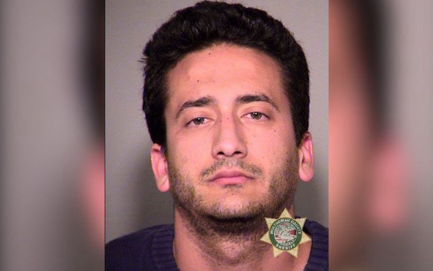
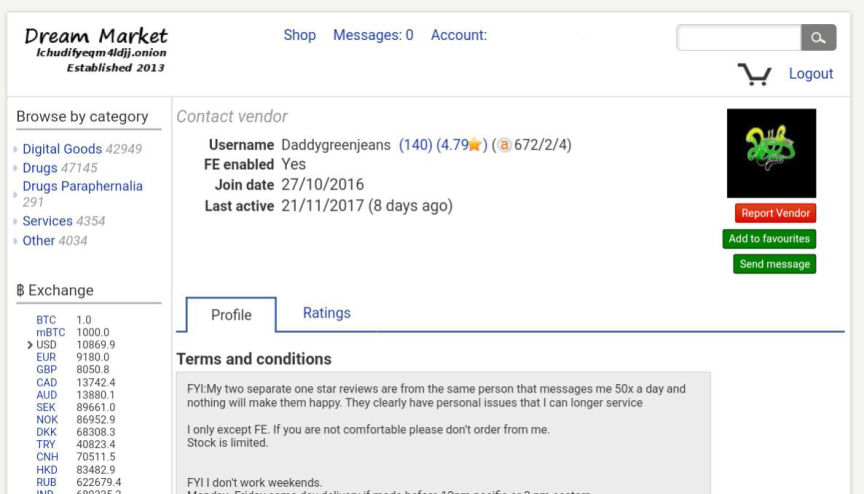
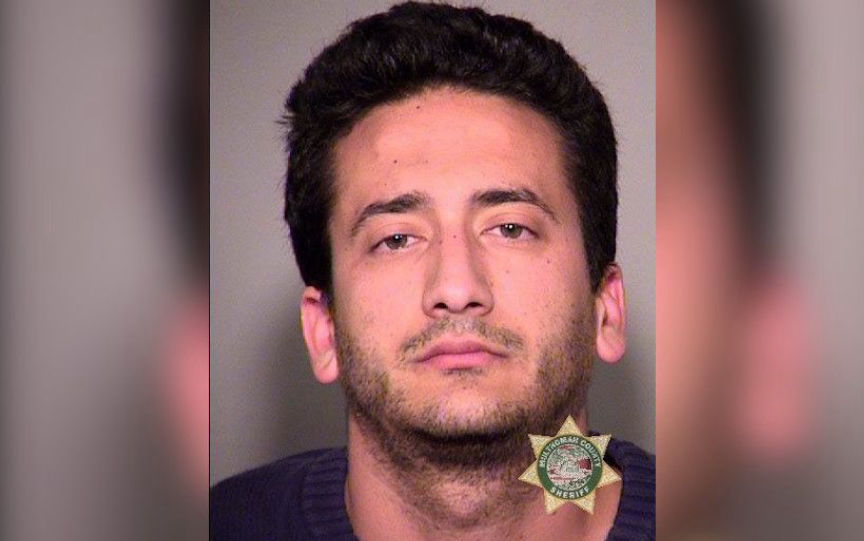
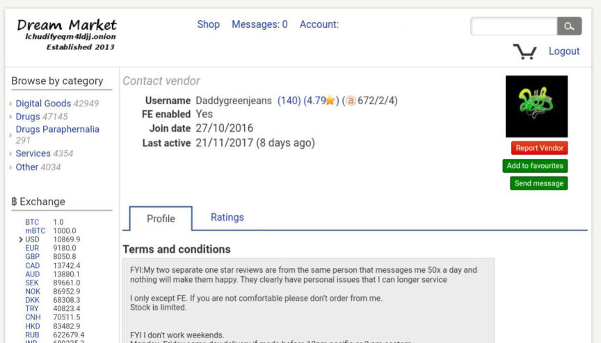

Fentanyl Vendor "DaddyGreenJeans" Sentenced to 87 Months in Prison
Joseph Richard Caruso, 34, was sentenced in federal court to more than seven years in prison for one count of selling a controlled substance that resulted in death. Court documents revealed that Caruso sold fentanyl through darkweb marketplaces and that at least one of his customers had fatally overdosed.
On November 19, 2017, a United States Postal Inspection Service inspector discovered a suspicious package addressed to Caruso at his apartment in Lake Oswego, Oregon. A Homeland Security Investigations (HSI) agent working with the High Intensity Drug Trafficking Area Interdiction Taskforce opened the package and found a bag containing a white powder. A test at the Oregon State Police Laboratory identified the white powder as cyclopropylfentanyl.

Two days later the investigators conducted a controlled delivery at Caruso’s residence and arrested him after he had opened his mailbox. The Dream account controlled by Caruso–Daddygreenjeans–was last accessed the same day.
When Brady Straub, a 22-year-old from Wisconsin, had fatally overdosed on a powerful opioid in October 2017, law enforcement searched the house and found evidence later used in the case against Caruso. Law enforcement found packaging at Straub’s house that was “highly unique” and described as a bag with a “cartoon-like blue stick figure waving its arms with a clock in the belly.” Straub had also searched the internet for information on “daddygreenjeans” before he had overdosed.

After HSI Special Agents in Oregon had arrested Caruso, they searched his house and discovered packaging material that matched the material found at the scene of the Straub overdose. They later found evidence linking Caruso to vendor accounts on Dream Market, Agora, and Alphabay Market. He had completed more than 800 transactions in total and had earned roughly $764,000 from the sale of fentanyl and fentanyl analogues on the darkweb. He sold using the “daddygreenjeans” alias and the “Mr.Candy” alias on different markets.
Billy J. Williams, U.S. Attorney for the District of Oregon:
A highly-coordinated effort by four law enforcement agencies led to Mr. Caruso’s arrest less than two days after his most recent inbound fentanyl package was discovered. It’s this sort of nimble and decisive law enforcement work that’s required to keep synthetic opioids off of our streets and prevent additional overdoses. I applaud the tremendous work of everyone involved in this case.
Brad Bench, Special Agent in Charge of HSI Seattle:
This sentence is a significant step forward in eliminating deadly drugs from our community. Fentanyl is an extremely deadly substance. Blatant disregard for the safety of those who could have come into contact with it will not be tolerated. This case is a testament to the hard work HSI, and our law enforcement partners, do every day to combat these drugs from making it to our streets.
Source: USAO
This case involved interaction with HSI Beijing and the Chinese Ministry Public Security.
Further HSI database queries identified that HSI Beijing reported that CARUSO’s telephone number (503) 277-9884 was identified in a Chinese Ministry Public Security investigation where the Chinese dismantled a DTO sending out fentanyl to the United States. The CMPS sent out 17 leads from their takedown of the organization and identified that CARUSO’s number was associated to a package containing 50g Fentanyl addressed to another individual in the Portland, Oregon on November 1, 2016. Toll records show that CARUSO last called that individual on October 19, 2017.
Caruso’s packs were being seized as early as November 2016 as well, according to another court document:
I was informed on November 11, 2017 that USPS Inspectors along with HSI Detroit BEST Special Agents seized two parcels on August 16, 2016. These parcels were shipped from XHexpress Room 991, Dixi East Building Futian District Shenzhen, China and addressed to a recipient in Allen Park, Michigan. Each parcel here was manifested as “Present” and upon inspection, it was observed that each package actually contained a fine, white, powdery substance that was suspected to be Fentanyl. Forensic Science Laboratory in Oakland County Sheriff’s office later confirmed that the substance tested positive for Furanyl Fentanyl (HCl), and analogue of Fentanyl.
On November 19, 2017, a United States Postal Inspection Service inspector discovered a suspicious package addressed to Caruso at his apartment in Lake Oswego, Oregon. A Homeland Security Investigations (HSI) agent working with the High Intensity Drug Trafficking Area Interdiction Taskforce opened the package and found a bag containing a white powder. A test at the Oregon State Police Laboratory identified the white powder as cyclopropylfentanyl.

Joseph Richard Caruso Mugshot
Two days later the investigators conducted a controlled delivery at Caruso’s residence and arrested him after he had opened his mailbox. The Dream account controlled by Caruso–Daddygreenjeans–was last accessed the same day.
When Brady Straub, a 22-year-old from Wisconsin, had fatally overdosed on a powerful opioid in October 2017, law enforcement searched the house and found evidence later used in the case against Caruso. Law enforcement found packaging at Straub’s house that was “highly unique” and described as a bag with a “cartoon-like blue stick figure waving its arms with a clock in the belly.” Straub had also searched the internet for information on “daddygreenjeans” before he had overdosed.

Daddygreenjeans Dream Account
After HSI Special Agents in Oregon had arrested Caruso, they searched his house and discovered packaging material that matched the material found at the scene of the Straub overdose. They later found evidence linking Caruso to vendor accounts on Dream Market, Agora, and Alphabay Market. He had completed more than 800 transactions in total and had earned roughly $764,000 from the sale of fentanyl and fentanyl analogues on the darkweb. He sold using the “daddygreenjeans” alias and the “Mr.Candy” alias on different markets.
Billy J. Williams, U.S. Attorney for the District of Oregon:
A highly-coordinated effort by four law enforcement agencies led to Mr. Caruso’s arrest less than two days after his most recent inbound fentanyl package was discovered. It’s this sort of nimble and decisive law enforcement work that’s required to keep synthetic opioids off of our streets and prevent additional overdoses. I applaud the tremendous work of everyone involved in this case.
Brad Bench, Special Agent in Charge of HSI Seattle:
This sentence is a significant step forward in eliminating deadly drugs from our community. Fentanyl is an extremely deadly substance. Blatant disregard for the safety of those who could have come into contact with it will not be tolerated. This case is a testament to the hard work HSI, and our law enforcement partners, do every day to combat these drugs from making it to our streets.
Source: USAO
This case involved interaction with HSI Beijing and the Chinese Ministry Public Security.
Further HSI database queries identified that HSI Beijing reported that CARUSO’s telephone number (503) 277-9884 was identified in a Chinese Ministry Public Security investigation where the Chinese dismantled a DTO sending out fentanyl to the United States. The CMPS sent out 17 leads from their takedown of the organization and identified that CARUSO’s number was associated to a package containing 50g Fentanyl addressed to another individual in the Portland, Oregon on November 1, 2016. Toll records show that CARUSO last called that individual on October 19, 2017.
Caruso’s packs were being seized as early as November 2016 as well, according to another court document:
I was informed on November 11, 2017 that USPS Inspectors along with HSI Detroit BEST Special Agents seized two parcels on August 16, 2016. These parcels were shipped from XHexpress Room 991, Dixi East Building Futian District Shenzhen, China and addressed to a recipient in Allen Park, Michigan. Each parcel here was manifested as “Present” and upon inspection, it was observed that each package actually contained a fine, white, powdery substance that was suspected to be Fentanyl. Forensic Science Laboratory in Oakland County Sheriff’s office later confirmed that the substance tested positive for Furanyl Fentanyl (HCl), and analogue of Fentanyl.